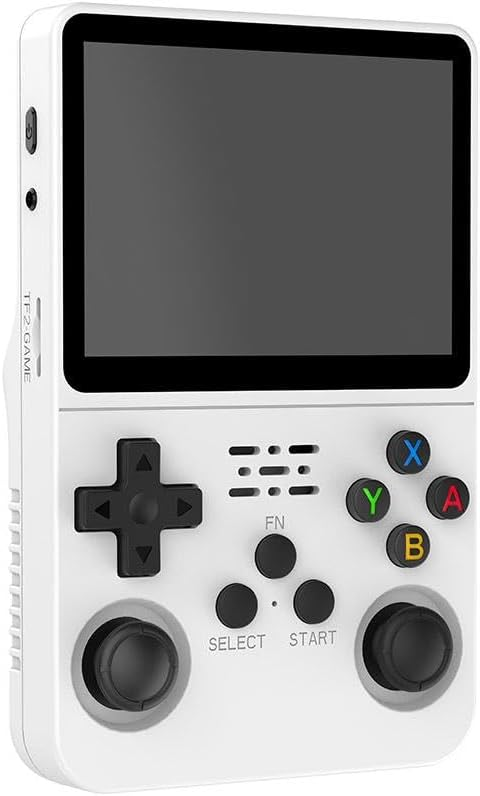

The R36S is a hand-held gaming console available online.
This page is about re-purposing it as a generic Linux device for custom software - ie:
writing & running your own applications on it. If you want to use the R36S for its normal
purpose (gaming etc..), then I would recommend you look at
ArkOS, or one of
the other custom firmware
systems that support it.
This page is for doing fully custom developments, using the R36S as a hardware platform.
It has the following basic hardware:
Benchmarks & Hardware Testing
Preamble
These benchmarks are run with the performance scheduler enabled, to ensure the CPU is always
run as fast as possible. Note: Some of these benchmark programs are not built in the default
buildroot image, and will need to be manually enabled.
# echo performance > /sys/devices/system/cpu/cpu0/cpufreq/scaling_governor
# cat /sys/devices/system/cpu/cpu0/cpufreq/scaling_governor
performance
MHz
github.com/wtarreau/mhz
# mhz
count=497425 us50=19997 us250=96924 diff=76927 cpu_MHz=1293.239
Whetstone 1.2
www.netlib.org/benchmark/
# whetstone 500000
Loops: 500000, Iterations: 1, Duration: 10 sec.
C Converted Double Precision Whetstones: 5000.0 MIPS
Dhrystone 2
www.netlib.org/benchmark/
# dhrystone 50000000
Dhrystone Benchmark, Version 2.1 (Language: C)
Program compiled without 'register' attribute
Execution starts, 50000000 runs through Dhrystone
Execution ends
Final values of the variables used in the benchmark:
Int_Glob: 5
should be: 5
Bool_Glob: 1
should be: 1
Ch_1_Glob: A
should be: A
Ch_2_Glob: B
should be: B
Arr_1_Glob[8]: 7
should be: 7
Arr_2_Glob[8][7]: 50000010
should be: Number_Of_Runs + 10
Ptr_Glob->
Ptr_Comp: -927526240
should be: (implementation-dependent)
Discr: 0
should be: 0
Enum_Comp: 2
should be: 2
Int_Comp: 17
should be: 17
Str_Comp: DHRYSTONE PROGRAM, SOME STRING
should be: DHRYSTONE PROGRAM, SOME STRING
Next_Ptr_Glob->
Ptr_Comp: -927526240
should be: (implementation-dependent), same as above
Discr: 0
should be: 0
Enum_Comp: 1
should be: 1
Int_Comp: 18
should be: 18
Str_Comp: DHRYSTONE PROGRAM, SOME STRING
should be: DHRYSTONE PROGRAM, SOME STRING
Int_1_Loc: 5
should be: 5
Int_2_Loc: 13
should be: 13
Int_3_Loc: 7
should be: 7
Enum_Loc: 1
should be: 1
Str_1_Loc: DHRYSTONE PROGRAM, 1'ST STRING
should be: DHRYSTONE PROGRAM, 1'ST STRING
Str_2_Loc: DHRYSTONE PROGRAM, 2'ND STRING
should be: DHRYSTONE PROGRAM, 2'ND STRING
Microseconds for one run through Dhrystone: 0.2
Dhrystones per Second: 5313496.5
RamSMP
github.com/cruvolo/ramspeed-smp
# ramsmp -b 1
RAMspeed/SMP (GENERIC) v3.5.0 by Rhett M. Hollander and Paul V. Bolotoff, 2002-09
8Gb per pass mode, 2 processes
INTEGER & WRITING 1 Kb block: 31725.15 MB/s
INTEGER & WRITING 2 Kb block: 32488.16 MB/s
INTEGER & WRITING 4 Kb block: 31273.08 MB/s
INTEGER & WRITING 8 Kb block: 30794.42 MB/s
INTEGER & WRITING 16 Kb block: 28151.88 MB/s
INTEGER & WRITING 32 Kb block: 25592.05 MB/s
INTEGER & WRITING 64 Kb block: 23752.54 MB/s
INTEGER & WRITING 128 Kb block: 16333.79 MB/s
INTEGER & WRITING 256 Kb block: 4139.72 MB/s
INTEGER & WRITING 512 Kb block: 3052.76 MB/s
INTEGER & WRITING 1024 Kb block: 2687.96 MB/s
INTEGER & WRITING 2048 Kb block: 2558.74 MB/s
INTEGER & WRITING 4096 Kb block: 2495.56 MB/s
INTEGER & WRITING 8192 Kb block: 2455.05 MB/s
INTEGER & WRITING 16384 Kb block: 2444.15 MB/s
INTEGER & WRITING 32768 Kb block: 2426.52 MB/s
# ramsmp -b 2
RAMspeed/SMP (GENERIC) v3.5.0 by Rhett M. Hollander and Paul V. Bolotoff, 2002-09
8Gb per pass mode, 2 processes
INTEGER & READING 1 Kb block: 18657.31 MB/s
INTEGER & READING 2 Kb block: 19117.18 MB/s
INTEGER & READING 4 Kb block: 19015.44 MB/s
INTEGER & READING 8 Kb block: 19224.95 MB/s
INTEGER & READING 16 Kb block: 19315.28 MB/s
INTEGER & READING 32 Kb block: 14500.51 MB/s
INTEGER & READING 64 Kb block: 12601.52 MB/s
INTEGER & READING 128 Kb block: 9393.90 MB/s
INTEGER & READING 256 Kb block: 2493.20 MB/s
INTEGER & READING 512 Kb block: 2113.54 MB/s
INTEGER & READING 1024 Kb block: 2079.59 MB/s
INTEGER & READING 2048 Kb block: 2128.96 MB/s
INTEGER & READING 4096 Kb block: 2127.43 MB/s
INTEGER & READING 8192 Kb block: 2127.84 MB/s
INTEGER & READING 16384 Kb block: 2128.69 MB/s
INTEGER & READING 32768 Kb block: 2129.91 MB/s
# ramsmp -b 3
RAMspeed/SMP (GENERIC) v3.5.0 by Rhett M. Hollander and Paul V. Bolotoff, 2002-09
8Gb per pass mode, 2 processes
INTEGER Copy: 2065.59 MB/s
INTEGER Scale: 1986.97 MB/s
INTEGER Add: 1615.27 MB/s
INTEGER Triad: 1580.92 MB/s
---
INTEGER AVERAGE: 1812.19 MB/s
# ramsmp -b 4
RAMspeed/SMP (GENERIC) v3.5.0 by Rhett M. Hollander and Paul V. Bolotoff, 2002-09
8Gb per pass mode, 2 processes
FL-POINT & WRITING 1 Kb block: 32645.77 MB/s
FL-POINT & WRITING 2 Kb block: 32949.56 MB/s
FL-POINT & WRITING 4 Kb block: 32244.32 MB/s
FL-POINT & WRITING 8 Kb block: 31326.32 MB/s
FL-POINT & WRITING 16 Kb block: 28502.43 MB/s
FL-POINT & WRITING 32 Kb block: 25335.06 MB/s
FL-POINT & WRITING 64 Kb block: 22989.79 MB/s
FL-POINT & WRITING 128 Kb block: 10451.13 MB/s
FL-POINT & WRITING 256 Kb block: 4236.35 MB/s
FL-POINT & WRITING 512 Kb block: 3085.57 MB/s
FL-POINT & WRITING 1024 Kb block: 2715.68 MB/s
FL-POINT & WRITING 2048 Kb block: 2587.16 MB/s
FL-POINT & WRITING 4096 Kb block: 2512.82 MB/s
FL-POINT & WRITING 8192 Kb block: 2471.48 MB/s
FL-POINT & WRITING 16384 Kb block: 2450.66 MB/s
FL-POINT & WRITING 32768 Kb block: 2432.75 MB/s
# ramsmp -b 5
RAMspeed/SMP (GENERIC) v3.5.0 by Rhett M. Hollander and Paul V. Bolotoff, 2002-09
8Gb per pass mode, 2 processes
FL-POINT & READING 1 Kb block: 19054.87 MB/s
FL-POINT & READING 2 Kb block: 19404.67 MB/s
FL-POINT & READING 4 Kb block: 19334.34 MB/s
FL-POINT & READING 8 Kb block: 19506.71 MB/s
FL-POINT & READING 16 Kb block: 19504.42 MB/s
FL-POINT & READING 32 Kb block: 15559.88 MB/s
FL-POINT & READING 64 Kb block: 12594.27 MB/s
FL-POINT & READING 128 Kb block: 9090.03 MB/s
FL-POINT & READING 256 Kb block: 2614.38 MB/s
FL-POINT & READING 512 Kb block: 2149.01 MB/s
FL-POINT & READING 1024 Kb block: 2112.19 MB/s
FL-POINT & READING 2048 Kb block: 2148.63 MB/s
FL-POINT & READING 4096 Kb block: 2148.72 MB/s
FL-POINT & READING 8192 Kb block: 2149.29 MB/s
FL-POINT & READING 16384 Kb block: 2150.60 MB/s
FL-POINT & READING 32768 Kb block: 2149.96 MB/s
# ramsmp -b 6
RAMspeed/SMP (GENERIC) v3.5.0 by Rhett M. Hollander and Paul V. Bolotoff, 2002-09
8Gb per pass mode, 2 processes
FL-POINT Copy: 2066.56 MB/s
FL-POINT Scale: 1952.23 MB/s
FL-POINT Add: 1615.04 MB/s
FL-POINT Triad: 1246.41 MB/s
---
FL-POINT AVERAGE: 1720.06 MB/s
Memtester
pyropus.ca./software/memtester
This is less of a benchmark and more of a sanity check that the hardware appears to be
functioning properly. This takes ~18 minutes to finish.
# memtester 500M 1
memtester version 4.5.1 (64-bit)
Copyright (C) 2001-2020 Charles Cazabon.
Licensed under the GNU General Public License version 2 (only).
pagesize is 4096
pagesizemask is 0xfffffffffffff000
want 500MB (524288000 bytes)
got 500MB (524288000 bytes), trying mlock ...locked.
Loop 1/1:
Stuck Address : ok
Random Value : ok
Compare XOR : ok
Compare SUB : ok
Compare MUL : ok
Compare DIV : ok
Compare OR : ok
Compare AND : ok
Sequential Increment: ok
Solid Bits : ok
Block Sequential : ok
Checkerboard : ok
Bit Spread : ok
Bit Flip : ok
Walking Ones : ok
Walking Zeroes : ok
8-bit Writes : ok
16-bit Writes : ok
Done.
bonnie++ - v1.03e (SD card)
Performance here is quite dependant on the SD card that is installed. This benchmark shows
~34MB/s write, 53MB/s read performance.
www.coker.com.au/bonnie++
# mount /dev/mmcblk0p2 /mnt/
[ 2014.668991] EXT4-fs (mmcblk0p2): mounted filesystem e139ce78-9841-40fe-8823-96a304a09859 r/w without journal. Quota mode: none.
# df -h
Filesystem Size Used Available Use% Mounted on
devtmpfs 429.8M 0 429.8M 0% /dev
tmpfs 474.5M 0 474.5M 0% /dev/shm
tmpfs 474.5M 32.0K 474.4M 0% /tmp
tmpfs 474.5M 100.0K 474.4M 0% /run
/dev/mmcblk0p2 6.4G 2.8G 3.3G 45% /mnt
# mkdir /mnt/bonnie
# bonnie++ -d /mnt/bonnie/ -u 0:0
Using uid:0, gid:0.
Writing with putc()...done
Writing intelligently...done
Rewriting...done
Reading with getc()...done
Reading intelligently...done
start 'em...done...done...done...
Create files in sequential order...done.
Stat files in sequential order...done.
Delete files in sequential order...done.
Create files in random order...done.
Stat files in random order...done.
Delete files in random order...done.
Version 1.03e ------Sequential Output------ --Sequential Input- --Random-
-Per Chr- --Block-- -Rewrite- -Per Chr- --Block-- --Seeks--
Machine Size K/sec %CP K/sec %CP K/sec %CP K/sec %CP K/sec %CP /sec %CP
buildroot 2G 24834 98 33960 13 18684 14 24672 97 52645 24 2682 32
------Sequential Create------ --------Random Create--------
-Create-- --Read--- -Delete-- -Create-- --Read--- -Delete--
files /sec %CP /sec %CP /sec %CP /sec %CP /sec %CP /sec %CP
16 13161 98 +++++ +++ 20575 95 709 98 +++++ +++ 18645 95
buildroot,2G,24834,98,33960,13,18684,14,24672,97,52645,24,2681.8,32,16,13161,98,+++++,+++,20575,95,709,98,+++++,+++,18645,95
glmark2-es2-drm
Note: This test was run when still mid-way through kernel porting. Results may not be
accurate now. This test takes ~5m to run.
# glmark2-es2-drm
Warning: DRM_CAP_ASYNC_PAGE_FLIP not supported, falling back to 'mailbox' mode for SwapInterval(0).
=======================================================
glmark2 2023.01
=======================================================
OpenGL Information
GL_VENDOR: Mesa
GL_RENDERER: Mali-G31 (Panfrost)
GL_VERSION: OpenGL ES 3.1 Mesa 24.0.7
Surface Config: buf=32 r=8 g=8 b=8 a=8 depth=24 stencil=0 samples=0
Surface Size: 480x640 fullscreen
=======================================================
[build] use-vbo=false: FPS: 230 FrameTime: 4.349 ms
[build] use-vbo=true: FPS: 228 FrameTime: 4.386 ms
[texture] texture-filter=nearest: FPS: 679 FrameTime: 1.473 ms
[texture] texture-filter=linear: FPS: 668 FrameTime: 1.499 ms
[texture] texture-filter=mipmap: FPS: 694 FrameTime: 1.443 ms
[shading] shading=gouraud: FPS: 148 FrameTime: 6.803 ms
[shading] shading=blinn-phong-inf: FPS: 147 FrameTime: 6.804 ms
[shading] shading=phong: FPS: 144 FrameTime: 6.964 ms
[shading] shading=cel: FPS: 144 FrameTime: 6.975 ms
[bump] bump-render=high-poly: FPS: 49 FrameTime: 20.752 ms
[bump] bump-render=normals: FPS: 753 FrameTime: 1.329 ms
[bump] bump-render=height: FPS: 720 FrameTime: 1.390 ms
[effect2d] kernel=0,1,0;1,-4,1;0,1,0;: FPS: 554 FrameTime: 1.805 ms
[effect2d] kernel=1,1,1,1,1;1,1,1,1,1;1,1,1,1,1;: FPS: 195 FrameTime: 5.151 ms
[pulsar] light=false:quads=5:texture=false: FPS: 776 FrameTime: 1.289 ms
[desktop] blur-radius=5:effect=blur:passes=1:separable=true:windows=4: FPS: 156 FrameTime: 6.415 ms
[desktop] effect=shadow:windows=4: FPS: 440 FrameTime: 2.275 ms
[buffer] columns=200:interleave=false:update-dispersion=0.9:update-fraction=0.5:update-method=map: FPS: 43 FrameTime: 23.706 ms
[buffer] columns=200:interleave=false:update-dispersion=0.9:update-fraction=0.5:update-method=subdata: FPS: 43 FrameTime: 23.572 ms
[buffer] columns=200:interleave=true:update-dispersion=0.9:update-fraction=0.5:update-method=map: FPS: 52 FrameTime: 19.542 ms
[ideas] speed=duration: FPS: 190 FrameTime: 5.290 ms
[jellyfish] default>: FPS: 196 FrameTime: 5.127 ms
[terrain] default: FPS: 14 FrameTime: 74.175 ms
[shadow] default: FPS: 106 FrameTime: 9.457 ms
[refract] default: FPS: 12 FrameTime: 84.059 ms
[conditionals] fragment-steps=0:vertex-steps=0: FPS: 544 FrameTime: 1.839 ms
[conditionals] fragment-steps=5:vertex-steps=0: FPS: 437 FrameTime: 2.292 ms
[conditionals] fragment-steps=0:vertex-steps=5: FPS: 543 FrameTime: 1.843 ms
[function] fragment-complexity=low:fragment-steps=5: FPS: 539 FrameTime: 1.857 ms
[function] fragment-complexity=medium:fragment-steps=5: FPS: 303 FrameTime: 3.305 ms
[loop] fragment-loop=false:fragment-steps=5:vertex-steps=5: FPS: 531 FrameTime: 1.885 ms
[loop] fragment-steps=5:fragment-uniform=false:vertex-steps=5: FPS: 531 FrameTime: 1.885 ms
[loop] fragment-steps=5:fragment-uniform=true:vertex-steps=5: FPS: 317 FrameTime: 3.159 ms
=======================================================
glmark2 Score: 336
=======================================================
FFMPEG video display
ffmpeg -i /tmp/video.mp4 -pix_fmt bgra -vf "transpose=2,scale=640:480" -f fbdev /dev/fb0
Audio playback
amixer sset Master 255 && curl -L -o /tmp/sample.wav https://www2.cs.uic.edu/~i101/SoundFiles/CantinaBand3.wav && aplay /tmp/sample.wav